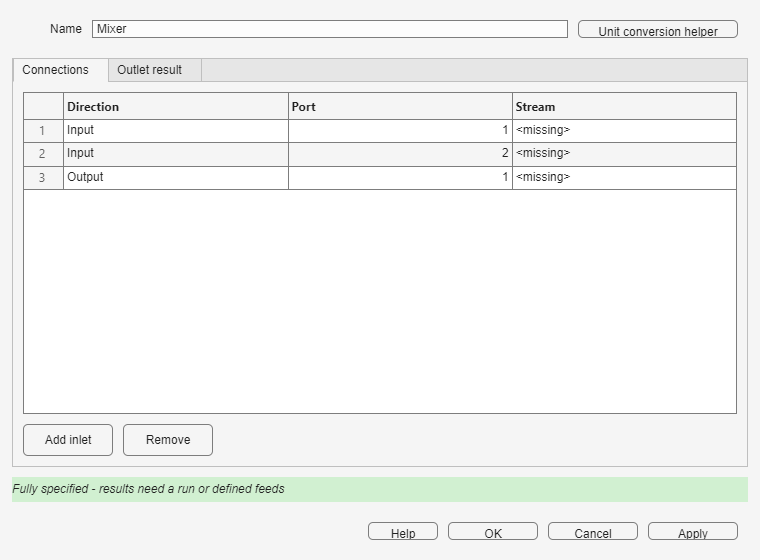
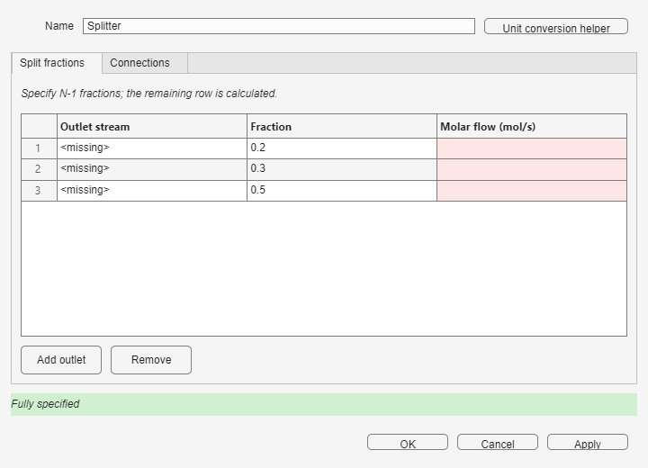
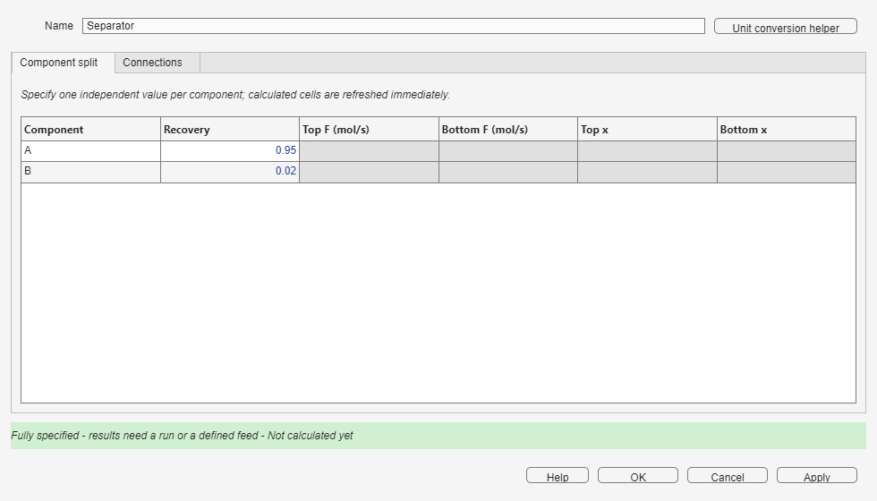
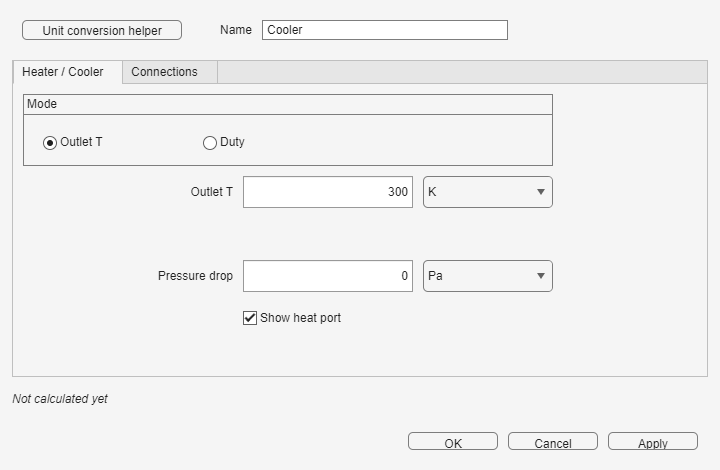

Each unit exposes only the independent information required by its material or energy balance.
Connect named Streams to every material port. Define thermodynamic data before using a Mixer energy balance or Heater/Cooler.
Connect two or more inlet Streams and one outlet Stream. Add inlet and Remove change the number of material inputs. The outlet follows the combined material and energy balance.
| Variables | Relations used |
|---|---|
| Outlet component flows, temperature, pressure, and volumetric flow | Known inlets determine the outlet by the material and energy balances; the Mixer needs no independent specification. |

Example: example 16, Problem 30 - Mixer and adiabatic CSTR, uses a Mixer upstream of a reactor.
Connect one inlet Stream and two or more outlet Streams. Enter outlet fractions; one missing fraction is calculated automatically so the fractions sum to one. Every outlet retains the inlet state and composition.
| Variables | Relations used |
|---|---|
| One fraction and total molar flow for each outlet, plus inlet total molar flow | Fractions sum to one; each outlet flow equals its fraction multiplied by inlet flow. A Splitter with three outlets therefore needs two independent specifications. |

Example: example 4, Parallel CSTRs (Problem 40b), uses flow splitting before parallel branches.
Connect one Feed, a Top Stream, and a Bottom Stream. Enter each component's Recovery to Top; the Bottom receives the remainder. This block is a component splitter, not an equilibrium flash.
| Variables | Relations used |
|---|---|
| Recovery, Top and Bottom component flows, and Top and Bottom mole fractions for each component | Recovery divides each inlet component between Top and Bottom; each outlet composition follows its component flows. One independent value is needed per component. |

Example: example 49, CSTR, separator and recycle with purge, demonstrates both component recovery and recycle topology.
Connect Feed to Product. Enter any one of outlet temperature, temperature change, or duty; the energy balance calculates the others. Enter either pressure drop or outlet pressure. Positive duty heats the stream, and thermodynamic data are required.
| Variables | Relations used |
|---|---|
| Inlet and outlet temperature, temperature change, and duty | Temperature change links the two temperatures; the energy balance links outlet temperature and duty. |
| Inlet pressure, pressure drop, and outlet pressure | Outlet pressure equals inlet pressure minus pressure drop. |

Example: example 2, Adiabatic CSTR and cooler, uses the cooler to set the product temperature.
Add Recycle where a material loop is torn, or Adjust where a process value must meet a target.